Xu Guo
Postdoctoral Researcher
Wallenberg-NTU Presidential Postdoctoral Fellow
Department of Intelligent Systems
KTH Royal Institue of Technology, Sweden
Email: xugu AT kth.se
Wallenberg-NTU Presidential Postdoctoral Fellow
Department of Intelligent Systems
KTH Royal Institue of Technology, Sweden
Email: xugu AT kth.se
Short Bio
Dr. Xu Guo is a Researcher at KTH, Sweden working with Prof. Mikael Skoglund. She is supported by the prestigious Wallenberg-NTU Presidential Postdoctoral Fellowship. Previously, she was a Presidential Postdoctoral Fellow at NTU, Singapore working with Prof. Chunyan Miao. Before that, she received the Ph.D. degree in 2023 from NTU, Singapore, advised by Prof. Han Yu.
Research interests: Natural Language Processing, Generative AI, Efficient AI, Human-AI Communication
Research interests: Natural Language Processing, Generative AI, Efficient AI, Human-AI Communication
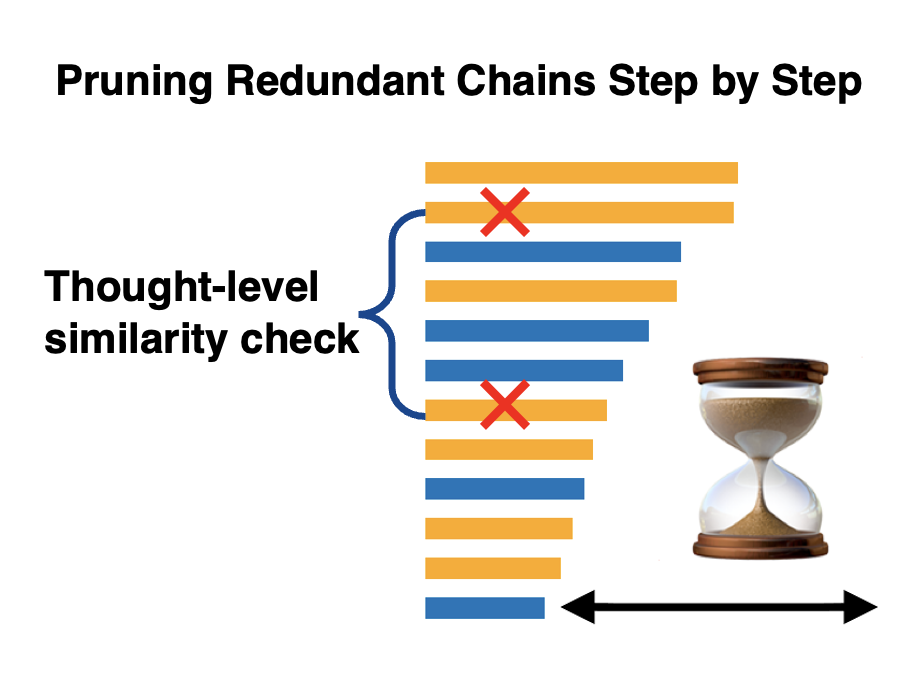
Slim-SC: Thought Pruning for Efficient Scaling with Self-Consistency
Proceedings of the 2025 Conference on Empirical Methods in Natural Language Processing (EMNLP 2025). Oral
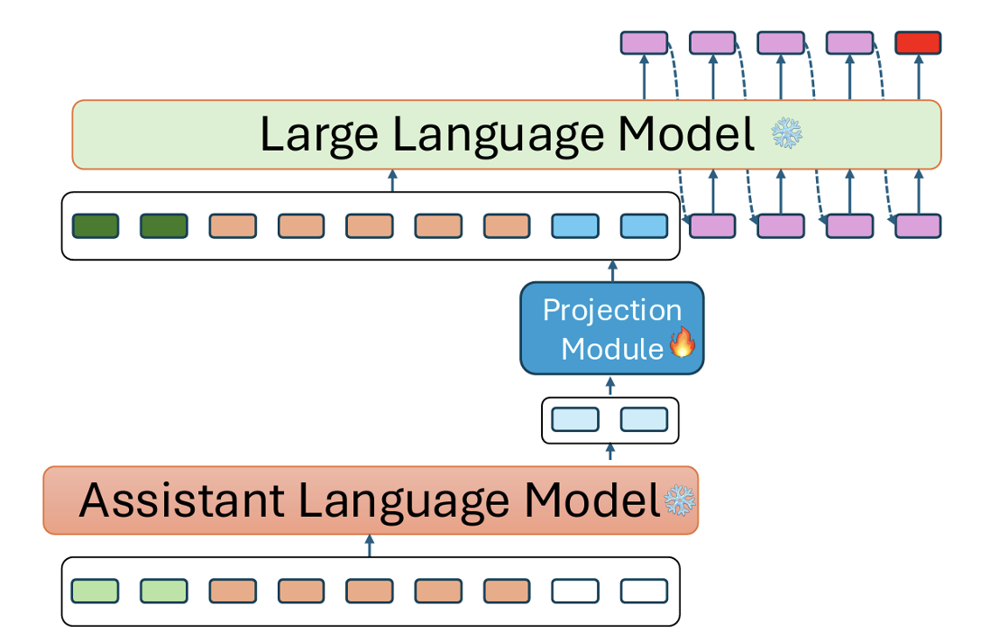
SoftCoT: Soft Chain-of-Thought for Efficient Reasoning with LLMs
Proceedings of the 63rd Annual Meeting of the Association for Computational Linguistics (ACL 2025)
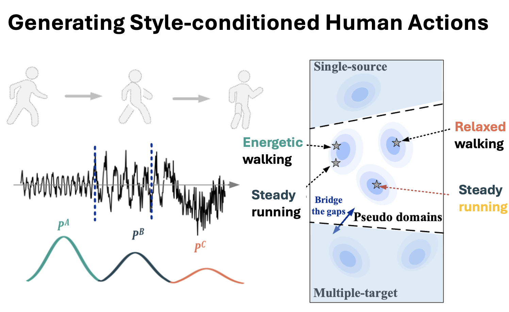
Diffusion-Guided Diversity for Single Domain Generalization in Time Series Classification
The 32nd ACM SIGKDD Conference on Knowledge Discovery and Data Mining (KDD 2025). Oral
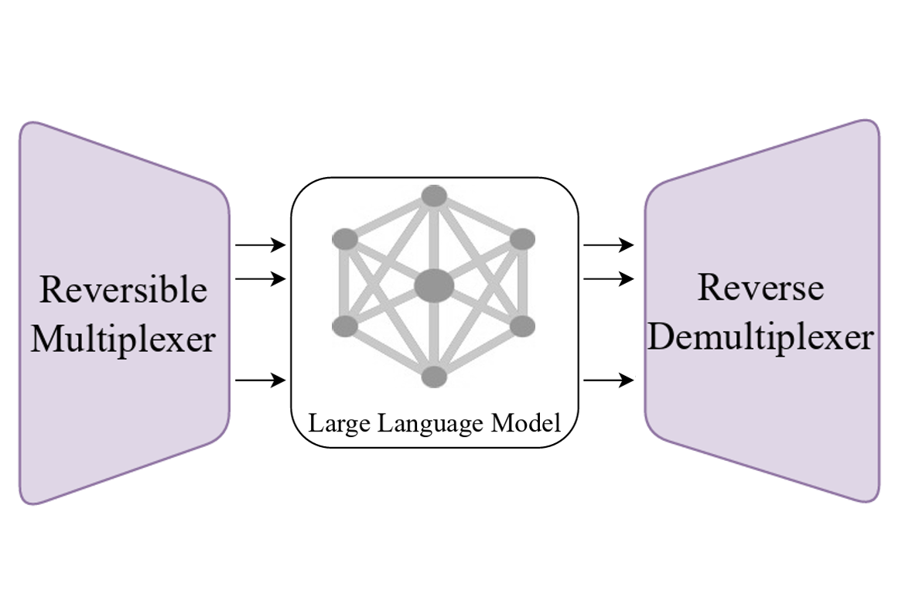
RevMUX: Data Multiplexing with Reversible Adapters for Efficient LLM Batch Inference
Proceedings of the 2024 Conference on Empirical Methods in Natural Language Processing (EMNLP 2024). Oral. Accepted with scores 5,5,5,3.5.

Generating Synthetic Datasets for Few-shot Prompt Tuning
Conference on Language Modeling（COLM 2024）
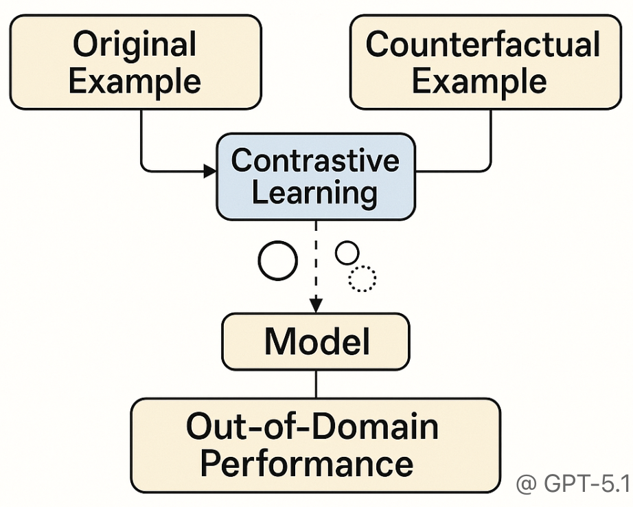
PairCFR: Enhancing Model Training on Paired Counterfactually Augmented Data through Contrastive Learning
Proceedings of the 62nd Annual Meeting of the Association for Computational Linguistics (ACL 2024)
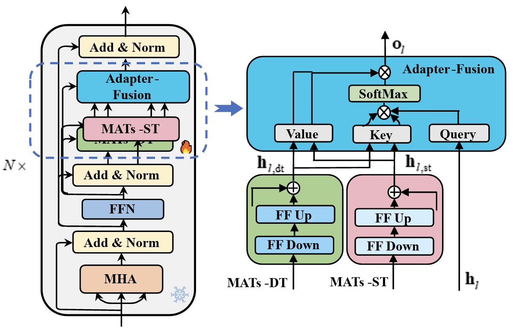
InteMATs: Integrating Granularity-Specific Multilingual Adapters for Cross-Lingual Transfer
Findings of the Association for Computational Linguistics: EMNLP 2023
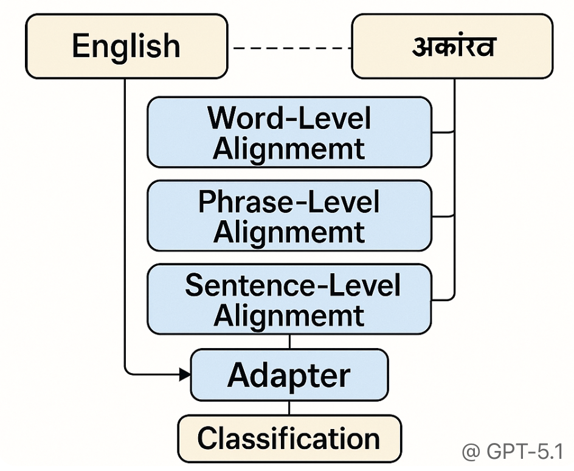
GranCATs: Cross-Lingual Enhancement through Granularity-Specific Contrastive Adapters
Conference on Information and Knowledge Management (CIKM 2023)
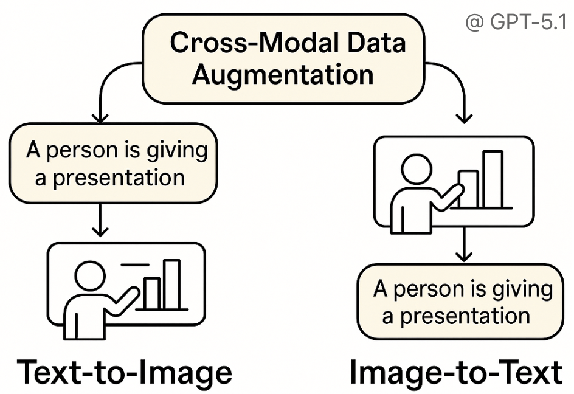
Training Multimedia Event Extraction With Generated Images and Captions
ACM Multimedia, 2023
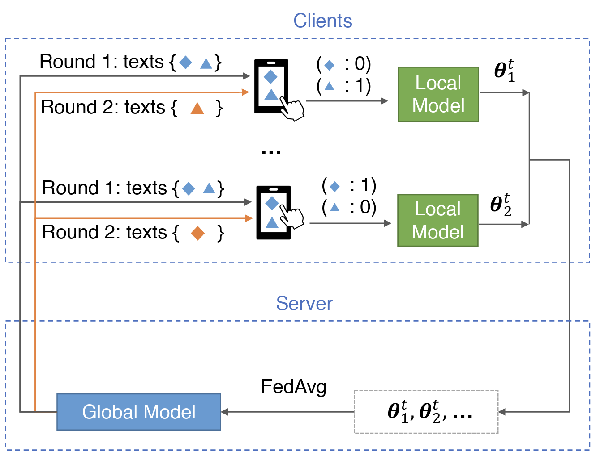
Federated Learning for Personalized Humor Recognition
ACM Transactions on Intelligent Systems and Technology, 2022
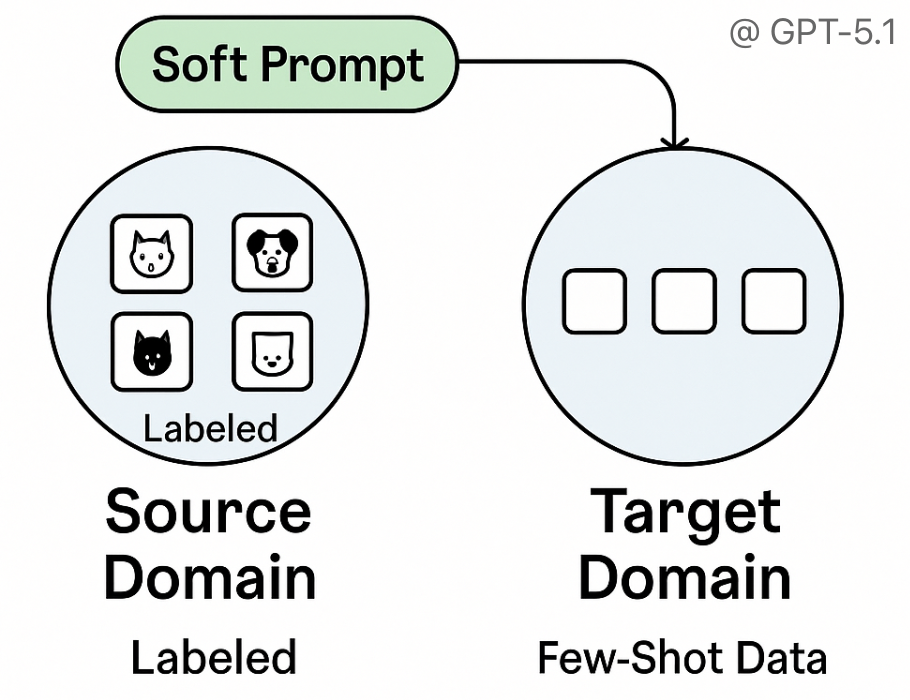
Improving the Sample Efficiency of Prompt Tuning with Domain Adaptation
Findings of the Association for Computational Linguistics: EMNLP 2022
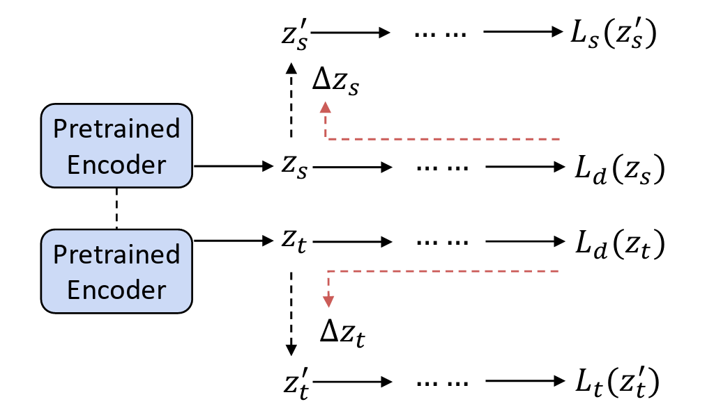
Latent-Optimized Adversarial Neural Transfer for Sarcasm Detection
Proceedings of the 2021 Conference of the North American Chapter of the Association for Computational Linguistics: Human Language Technologies (NAACL 2021). Oral